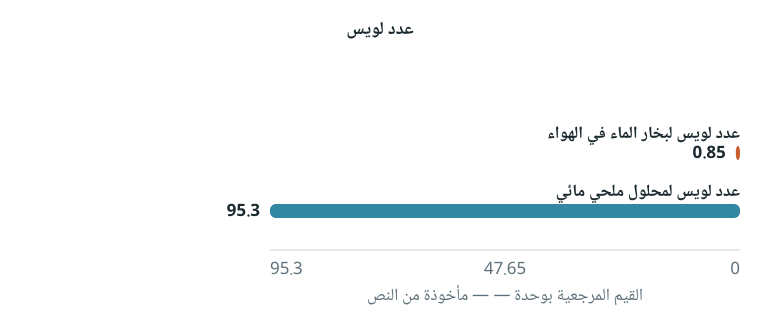

عدد لويس
Lewis number
عدد لويس Le يقارن انتشار الحرارة بانتشار الكتلة في مائع: Le = α/D = Sc/Pr. وعندما يقترب من الواحد يكون انتقال الحرارة وانتقال الكتلة متشابهين، وهذا يسمح باستعمال تشبيهات مشتركة.
في الغازات يكون عدد لويس قريباً من الواحد لأن الحرارة والمادة تنتقلان بالآلية نفسها تقريباً. وفي السوائل يختلفان كثيراً: الماء Le ≈ 100 لأن الحرارة تنتشر فيه أسرع بكثير من الأملاح. مثال: خليط بخار ماء في هواء عند 300 K: α = 2.20×10⁻⁵ m²/s وD = 2.60×10⁻⁵ m²/s، فيكون Le = 2.20/2.60 = 0.846، أي قريب من الواحد. وفي محلول ملحي مائي: α = 1.43×10⁻⁷ وD = 1.50×10⁻⁹، فيكون Le = 95.3.
كيف تعمل الظاهرة؟
الحرارة تنتقل في المائع بحركة الجزيئات وبتوصيلها، والمادة تنتقل بحركة الجزيئات نفسها. وفي الغازات تكون المسافات بين الجزيئات كبيرة والآليتان متشابهتان، فيقترب Le من الواحد. وفي السوائل تنتقل الحرارة بسرعة عبر الشبكة الجزيئية، بينما ينتقل الجزيء المذاب ببطء بين جزيئات المذيب، فيكون Le كبيراً. ولهذا تختلف استراتيجيات التصميم بين الغازات والسوائل.
العلاقة بالأرقام
Le = α/D = Sc/Pr، وα = k/(ρc_p)، وSc = ν/D، وPr = ν/α. مثال: هواء عند 300 K: ν = 1.57×10⁻⁵ وα = 2.20×10⁻⁵ وD = 2.60×10⁻⁵: Pr = 0.714 وSc = 0.604 وLe = 0.846. وماء عند 300 K: ν = 1.00×10⁻⁶ وα = 1.43×10⁻⁷ وD = 1.50×10⁻⁹: Pr = 6.99 وSc = 667 وLe = 95.3.
مفاهيم متقاربة
يُفرَّق بين Le وPr: الأول يقارن الحرارة بالكتلة والثاني اللزوجة بالحرارة. ويُفرَّق بين Le وSc: الأول يقارن الحرارة بالكتلة والثاني اللزوجة بالكتلة. ويُفرَّق بين Le في الغاز وLe في السائل. وأخيراً يُفرَّق بين Le المحسوب من خواص نقية وLe في خليط، حيث يعتمد الأخير على التركيب.
حدود التطبيق
عدد لويس يفترض خواص ثابتة لا تعتمد على التركيز أو الحرارة، وهذا تقريب يصلح في نطاق ضيق. ولا يصف الأنظمة التي يحدث فيها تفاعل كيميائي يغير عدد المكونات. ولا يصف الانتشار في المواد المسامية حيث يختلف معامل الانتشار الفعلي. وأخيراً لا يصف الحالات التي يهيمن فيها الحمل الطبيعي المزدوج (حراري وكتلي معاً).

| الكمية | القيمة | المصدر |
|---|---|---|
| عدد لويس لبخار الماء في الهواء | 0.846 — | [1] |
| عدد لويس لمحلول ملحي مائي | 95.3 — | [1] |
المصادر
- 1 CODATA Value: Boltzmann constant — NIST — CODATA 2022 recommended values (2024). physics.nist.gov/cgi-bin/cuu/Value?k · اطُّلع عليه 2026-11-22
- 2 CODATA Value: molar gas constant — NIST — CODATA 2022 recommended values (2024). physics.nist.gov/cgi-bin/cuu/Value?r · اطُّلع عليه 2026-11-22
استشهد بهذا المصطلح
الصيغتان مبنيتان من بيانات الصفحة نفسها: العنوان والتاريخ ورابط النسخة المنشورة.
عدد لويس — Lewis number. (2026). ديوان المعرفة — انفراد. https://infiradev.com/diwan/terms/term-lewis-number.html
@misc{term-lewis-number2026,
title = {عدد لويس},
titleaddon = {Lewis number},
howpublished = {{ديوان المعرفة — انفراد} — مرجع علمي عربي},
year = {2026},
url = {https://infiradev.com/diwan/terms/term-lewis-number.html},
urldate = {2026-11-26},
note = {مراجعة علمية: hermes (مراجعة معتمدة 2026-11-26)}
}
راجعه: hermes (مراجعة معتمدة 2026-11-26) · 2026-11-26 · آخر تحديث 2026-11-22